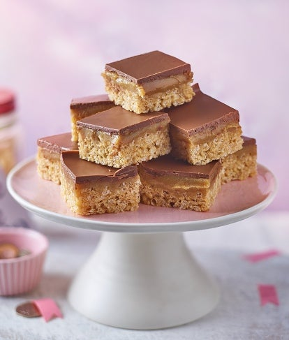

Millionaire Crispy Cake Recipe

This recipe and image both originated from https://www.carnation.co.uk/recipes/millionaires-rice-crispy-cakes
The very best millionaire crispy cakes
These are by far the best crispy cakes I have ever made and this recipe is very easy to follow.
If, like me, you love chewy, guewy, chocolatey crispy cakes, you will love these cookes for sure.
Ingredients
For the base and caramel
- 125g butter
- 125g dark brown soft sugar
- 397g carnation condensed milk
- 100g rice cereal
For the topping
- 150g dark or milk chocolate
Steps
- Heat the sugar and butter in a non-stick pan gently, stirring, until melted. Add the condensed milk and bring to a rapid boil, stirring continuously.
- Cook the caramel for a minute or so until the filling has thickened.
- Put one third of the caramel into a large bowl and mix in the rice cereal. Press the mixture into the base of the tin and chill until set (about 15 minutes). Reserve the caramel.
- Pour the remaining caramel over the base. Cool, then chill until set.
- Place the chocolate into a bowl and microwave gently in short 10-20 second bursts until melted, stirring occasionally. Once melted, spread over the caramel for the topping, then chill until set.
- Remove from the tin, cut into squares and enjoy!